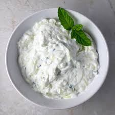

Simply smash up some deliciously ripe avocados and then add some chopped red onion, cherry tomatoes, cilantro, fresh lime, sea salt and black pepper and there you have it!
Tzatiki
Slice the cucumber in half lengthways and cut or scrape out the seeds – this is where most of the water content is. Grate the remaining cucumber.
Place the grated cucumber in a sieve, rest it on a bowl and add some sea salt. Give it a stir, and leave to drain for a few hours, or overnight in the fridge. Stir now and again, helping it along by pushing the liquid out with a spoon.
Finely chop the dill and mint leaves, then fold through the yoghurt mixture along with a squeeze of lemon juice and the dried mint (if using). Season with salt to taste.
Serve with warm pita or Turkish bread and crudités, or alongside salad and grilled meats.

Brocoli Soup
In a Dutch oven, bring water to boil. Add the broccoli, celery and carrots; boil 2-3 minutes or until crisp-tender. Drain; set vegetables aside.
In the same pot, saute onion in butter until tender. Stir in flour to form a smooth paste. Gradually stir in broth and milk until smooth. Bring to a boil; cook and stir for 1 minute or until thickened.
Stir in reserved vegetables and remaining ingredients. Reduce heat; cook, stirring occasionally, for 15 minutes or until vegetables are tender.